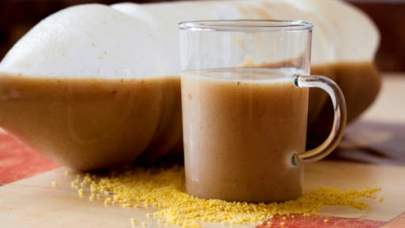
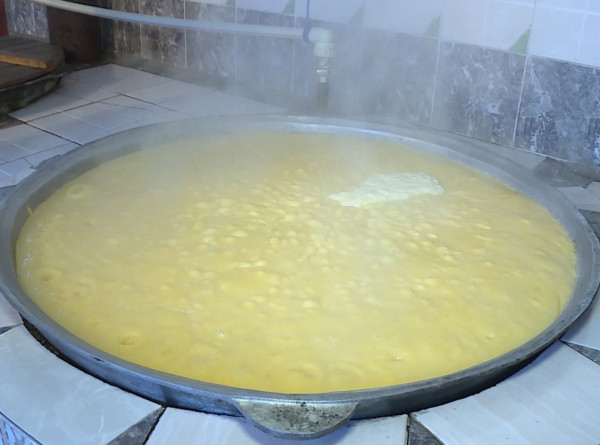
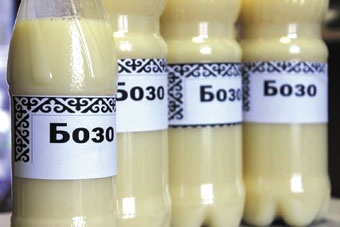

Максым или жарма — киргизский национальный прохладительный напиток, имеющий и другие названия (ачыма, ачыган кожо и другие) изготавливался раньше в основном из ячменя, а также из кукурузы, пшеницы и проса, в зависимости от того, где какие злаки культивировались. Имеется много разновидностей технологии приготовления, из-за чего максым, изготовленный десятью хозяйками в одном и том же селе, отличался десятью разными вкусовыми оттенками.
В Кыргызстане несколько видов национальных напитков, каждый из которых отличается особым способом приготовления и вкусом. По словам историка Тынчтыкбека Чоротегина, качество напитков зависит от ингредиентов, места и времени года.
Многие утверждает, что та жарма, которая производится компаниями, отличается от той, которая варится в домашних условиях. Он говорит, что фабричная жарма то же отличается по вкусу.«Бывший глава компании «Шоро» Табылды Эгембердиев пытался открыть в Китае завод по изготовлению жармы. Но она отличалась по вкусу от той, что готовят в Кыргызстане. Возможно, вода в той местности была другая», — сказал он.
Натуральный, национальный напиток кыргызов. Он очень полезен женщинам и детям, а мужчины его предпочитают пить на 3-4 день. Так как, тогда бозо обретает слабый алкогольный градус, но при этом не теряет своих полезных свойств. Бозо хорошо подымает гемоглобин, укрепляет иммунитет. Бозо готовят из толченого или крупномолотого пшена, кукурузы, пшеницы или риса. Самый вкусный, крепкий бозо получается из пшена и кукурузы. Основа бозо — угут (солод). В основном его готовят из пшеницы, иногда из смеси пшеницы с ячменем или просом.
1 кг. пшенки
7 л. воды
10 гр. топленого масла (или топленного бараньего жира)
50 гр. муки
3 ст.л. угут (сухой молотый микс из проросших семян)
1/4 ч.л. живых дрожжей (сухих 1/4 десеретной ложки)